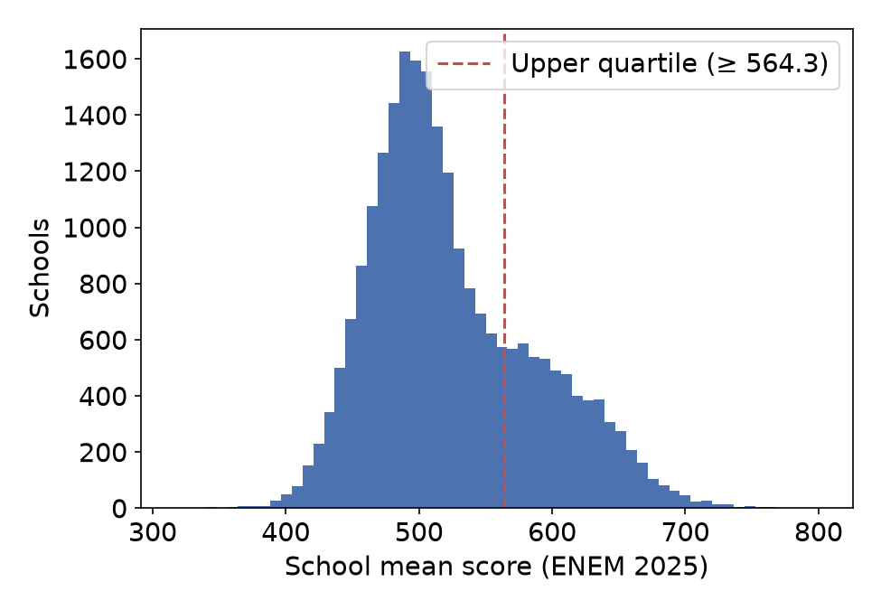
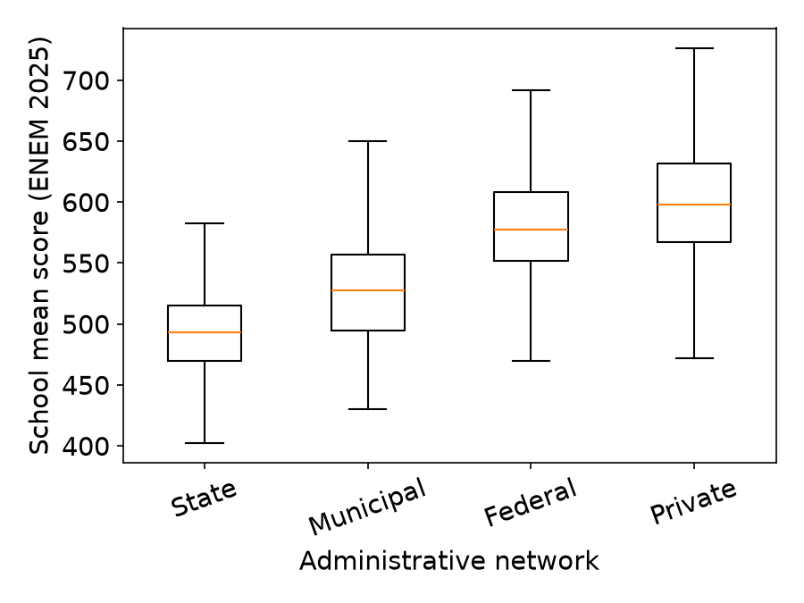
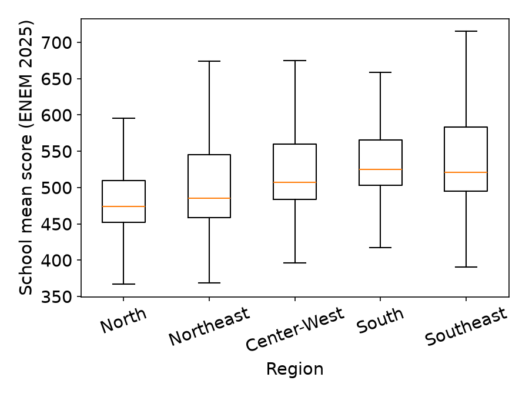
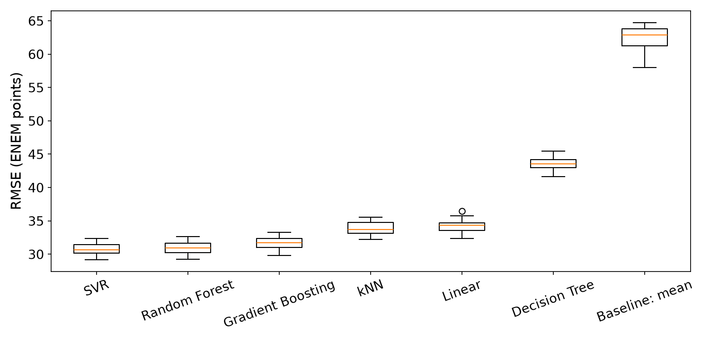
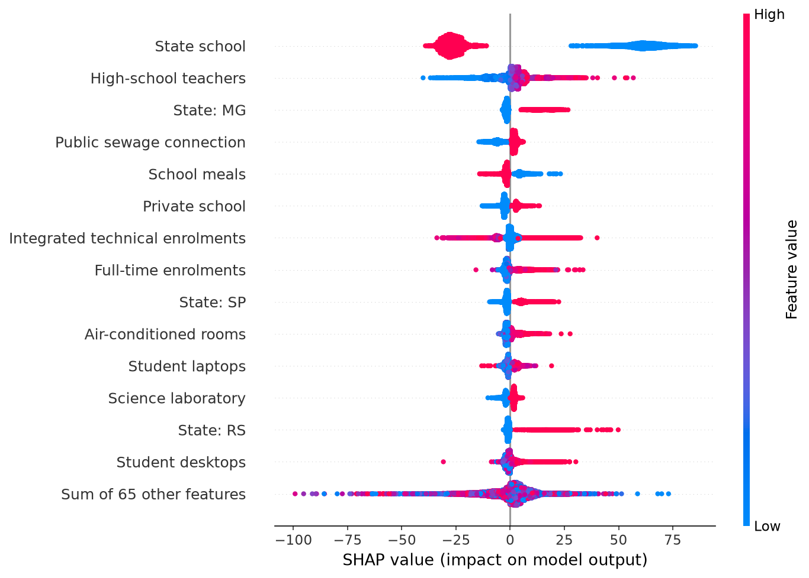
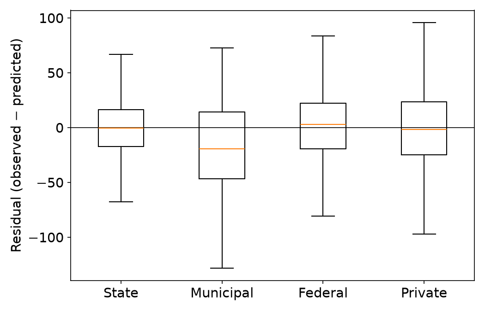

a escola não controla
infraestrutura, tamanho, professores
A estrutura de uma escola prediz a nota média dos seus alunos no ENEM?
E quanto ela explica além da rede (pública ou privada)?



no máximo 1,95% por atributo
15 escolas: vira faltante
transformação log
região e turmas: removidos
escolas mantidas (mudança de oferta)
O teste vaza para o pré-processamento
Medianas, escalas e categorias só do treino

| RMSE | padrão | ajustado |
|---|---|---|
| Grad. Boosting | 31,65 | 30,63 |
| SVR | 30,77 | 30,68 |
| Random Forest | 30,99 | 30,91 |
| Árvore | 43,51 | 33,31 |

37,7 pts · 7× o 2º atributo
5,2 pts
MG, SP, RS · rede de esgoto
| R² | GB | Linear |
|---|---|---|
| A · todos | 0,76 | 0,70 |
| B · sem rede | 0,73 | 0,64 |
| C · sem rede e merenda | 0,64 | 0,50 |

código, dados e resultados no GitHub
com saídas; local ou Colab
fixas: 42 e 42 + r
Python 3.12, scikit-learn 1.9.1
SHA-256 dos dados do INEP
Claude como apoio, com revisão humana